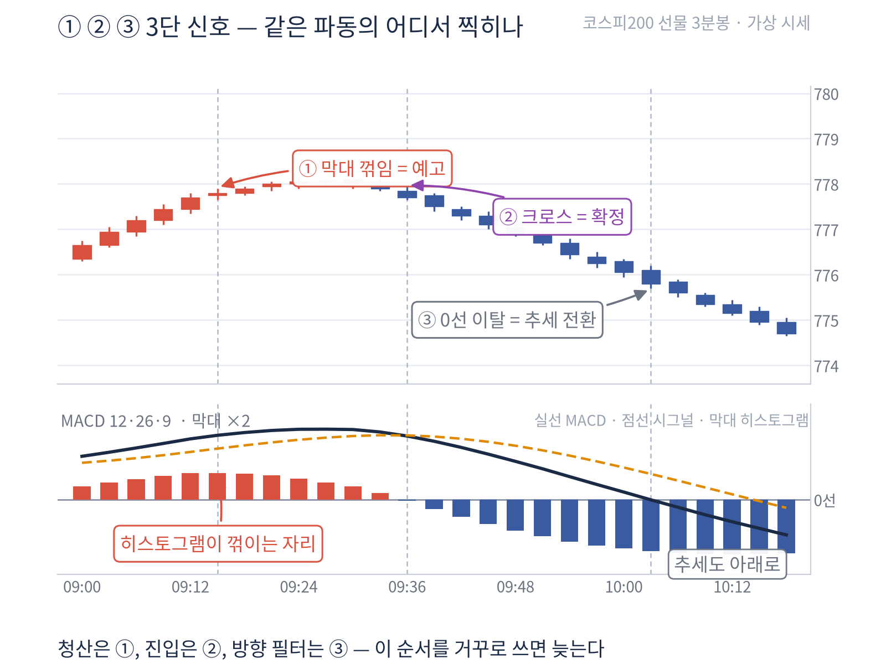
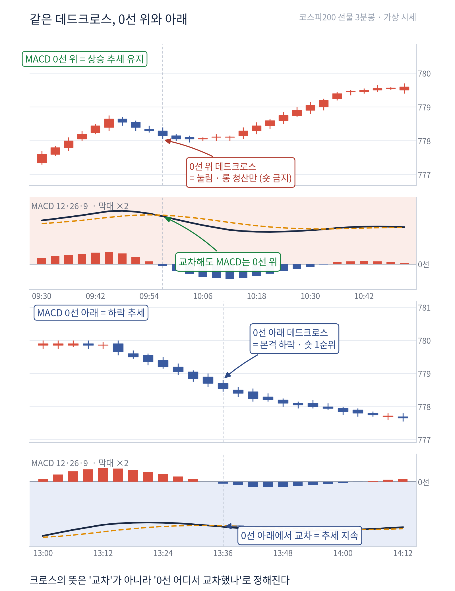
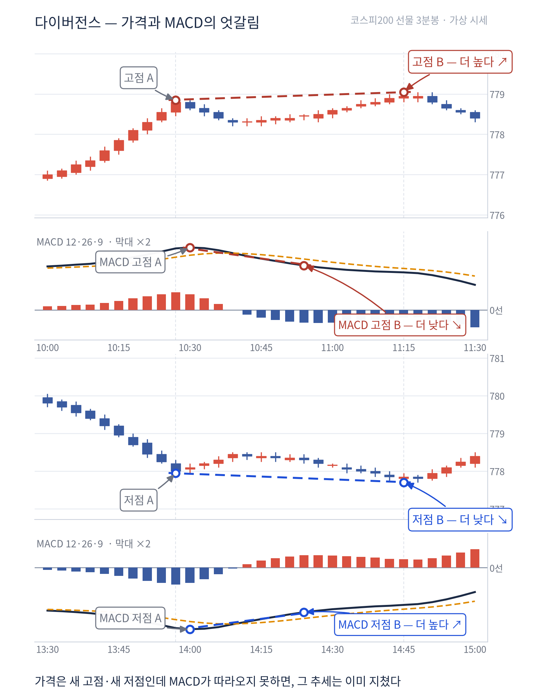
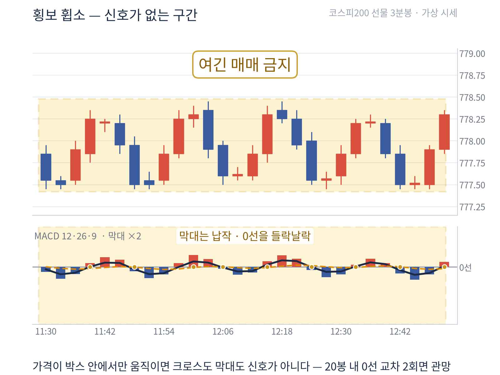
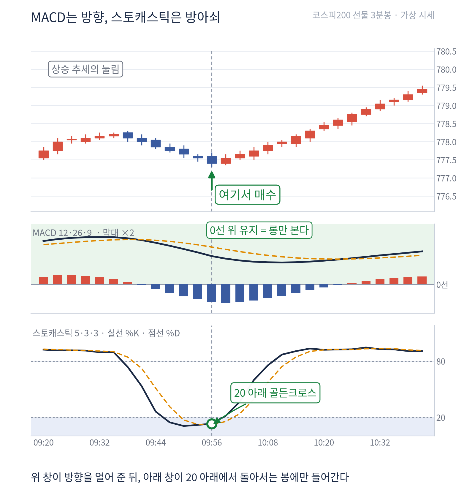
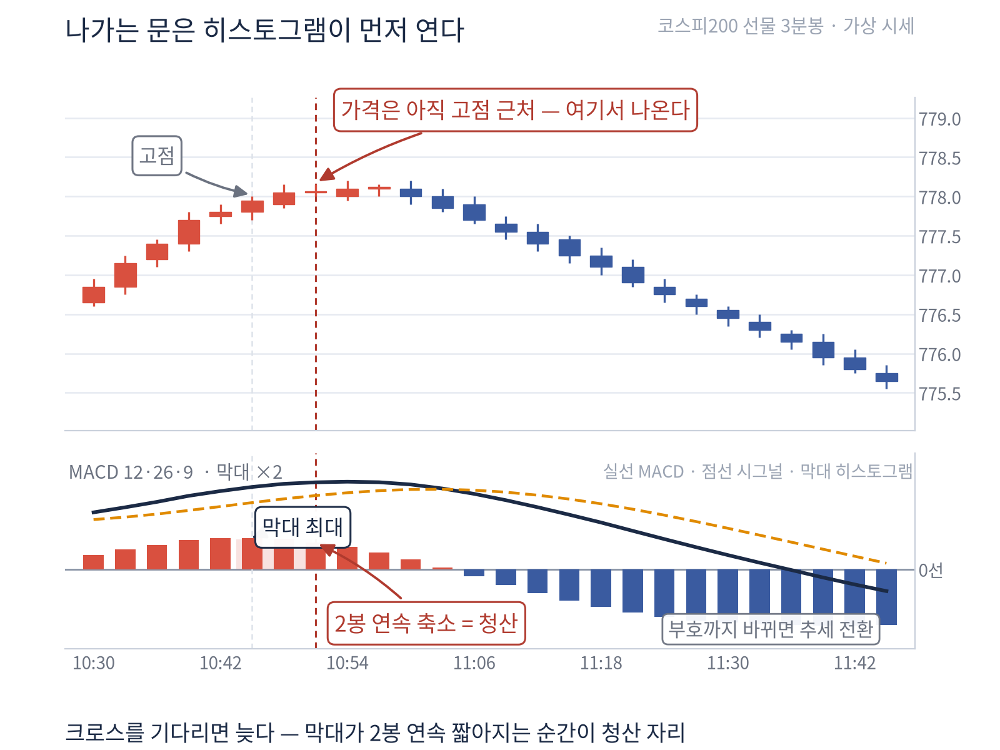

MACD는 외우는 지표가 아니라 눈에 익히는 그림입니다. 긴 설명은 걷어 내고, 3분봉을 25~30봉만 크게 확대해 그 자리에 표시했습니다. 한 장에 3줄 — 모양·뜻·행동만 보면 됩니다.
청산은 히스토그램이, 진입은 크로스가, 방향은 0선이 맡습니다. 이 셋을 뒤집어 쓰는 것이 MACD로 돈을 잃는 전부입니다.
3단 신호 — 어디서 찍히나
히스토그램 꺾임 → 크로스 → 0선, 한 파동 안에서 세 번 말한다

- 모양고점 직후 막대가 처음 짧아진 봉(①), 두 선이 교차한 봉(②), MACD가 0선을 뚫은 봉(③)이 차례로 찍힌다.
- 뜻힘이 꺾인 뒤에 교차가 오고, 교차 뒤에 추세가 뒤집힌다 — 셋은 같은 사건의 다른 시점이다.
- 행동①에서 청산 준비, ②에서 신규 진입 금지, ③부터 방향을 바꾼다.
0선 위 데드크로스 vs 0선 아래
같은 교차인데 위는 눌림, 아래는 하락 재개

- 모양위는 상승 중 잠깐 꺾인 자리(MACD가 0선 위), 아래는 반등이 꺾인 자리(MACD가 0선 아래).
- 뜻교차 자체가 아니라 0선 위치가 뜻을 정한다 — 위는 눌림, 아래는 추세 지속.
- 행동0선 위 데드는 롱 청산·관망(숏 금지), 0선 아래 데드는 숏 1순위.
다이버전스 — 고점은 높아지는데 힘은 빠진다
가격과 MACD의 추세선이 반대로 벌어지는 자리

- 모양가격에는 우상향(↗) 추세선, MACD에는 우하향(↘) 추세선이 그려진다 — 아래는 그 반대.
- 뜻가격은 가는데 힘이 따라오지 못한다 = 추세의 마지막 구간.
- 행동기존 포지션은 청산. 역방향 진입은 새 크로스가 확인된 뒤에.
횡보 휩소 — 아무 말도 하지 않는 구간
막대는 납작, 0선은 들락날락 — 여기서 지는 게 계좌가 녹는 길

- 모양가격은 박스 안, 막대는 납작하고, 0선을 두세 봉마다 넘나든다.
- 뜻방향 정보가 없다 — 이 구간의 어떤 크로스도 신뢰도가 없다.
- 행동매매 금지. 20봉 안에 0선 교차가 2회 이상이면 그날 MACD는 꺼 둔다.
MACD는 방향, 스토캐스틱은 방아쇠
3단 차트에서 방향과 시점이 동시에 맞는 한 봉

- 모양위 창 MACD가 0선 위에 있는 동안, 아래 창 스토캐스틱이 20 아래로 빠졌다 골든크로스.
- 뜻상승 추세의 눌림이 끝나는 자리 — 방향과 시점이 동시에 맞는다.
- 행동그 봉 마감에 롱 진입, 신호봉 저점 −1틱 이탈이면 즉시 손절.
나가는 문은 히스토그램이 먼저 연다
크로스를 기다리면 그만큼 늦다

- 모양막대가 최대로 길어진 뒤 두 봉 연속 짧아진다. 가격은 아직 고점 근처다.
- 뜻힘이 빠지기 시작한 것 — 크로스보다 다섯 봉 빠르다.
- 행동청산. 새 크로스가 날 때까지 재진입하지 않는다.
실전 규칙 여섯 줄
차트에서 본 것을 규칙으로 옮기면
코스피200 선물 3분봉 기준| 규칙 | 내용 | 이유 |
|---|---|---|
| 청산은 히스토그램 | 막대가 2봉 연속 짧아지면 나온다 | 크로스를 기다리면 5~10봉 늦다 |
| 진입은 크로스 | 두 선이 교차한 봉 마감에만 들어간다 | 봉 마감 전 진입은 금지 |
| 필터는 0선 | 0선 위면 롱만, 아래면 숏만 | 위 데드는 숏 금지, 아래 골든은 롱 금지 |
| 위치는 되돌림 | 신호봉 고점·저점이 손절 좌표 | 표준 손절 6틱(75,000원) 이내 |
| 시간은 장 초반 | 09:00~10:30이 가장 정직하다 | 12:00 전후·15:35 이후는 신호 무시 |
| 횟수는 하루 두 번 | 2연패면 그날은 끝 | 지표가 아니라 계좌를 지키는 규칙 |
무효화·손절
이렇게 되면 신호는 끝난 것
| 조건 | 행동 |
|---|---|
| 신호봉 마감 전 진입 | 금지 — 다시 그려질 수 있다 |
| 신호봉 저점 −1틱 이탈 | 즉시 손절, 새 크로스만 재진입 |
| 히스토그램이 반대로 확대 | 즉시 청산 |
| 3봉 안에 축소가 안 나옴 | 신호 폐기 |
| 0선 재이탈 | 청산 |
| 2연패 | 당일 중단 |
장중 8단계 체크
여덟 중 6개 이상 통과할 때만 진입하고, ⑤(0선 위치)와 ⑧(손절 폭)은 필수입니다. 둘이 빠지면 나머지가 다 맞아도 들어가지 않습니다.
차트 6장과 같은 내용을 인쇄용으로 묶은 PDF 내려받기 도 있습니다. 계산 전 과정·아펠 원전·백테스트 표까지 담았습니다.
차트는 모두 계산 설명용 가상 3분봉(코스피200 선물 0.05p 틱, 08:45 시작)입니다. 실제 11/24 시세가 아닙니다. 히스토그램 막대는 모양이 보이도록 2배로 그렸고, 부호와 방향은 그대로입니다. 출처: Appel 『The Moving Average Convergence-Divergence Trading Method』(1979)·『Technical Analysis』(2005), Aspray TASC V.6:8·V.6:9(1988), StockCharts ChartSchool, 키움증권 영웅문 지표 도움말(13·46·53).